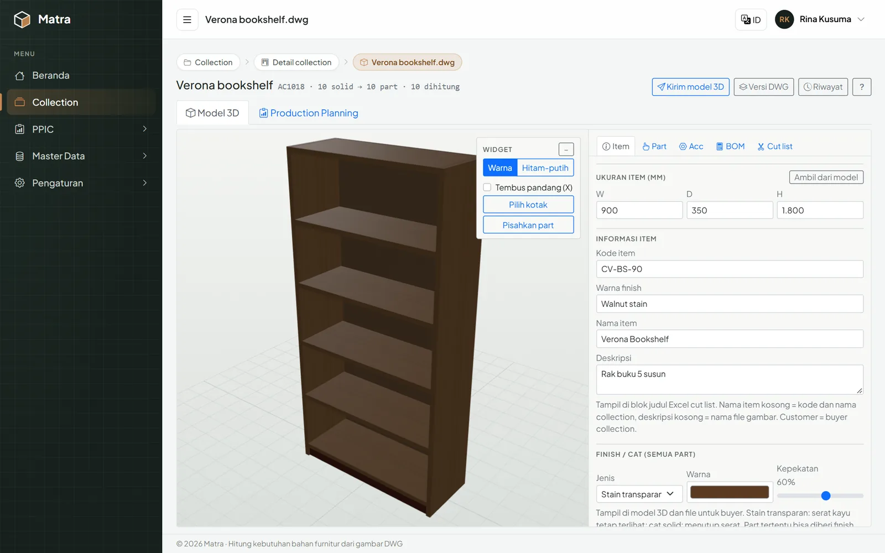

Baca model 3D langsung
File DWG dibaca tanpa AutoCAD, dari versi lama sampai AutoCAD terbaru. Komponen yang dipakai berulang kali di gambar ikut terhitung.
Buat collection per buyer, unggah satu atau banyak file. Satu gambar = satu item furnitur. File dibaca di latar, Anda bisa lanjut bekerja.
Setiap benda 3D dipecah menjadi part, termasuk komponen berulang. Ukuran bahan mentah diambil dari bentuknya; tenon, dowel, dan hardware dikenali sendiri.
Klik part di pratinjau 3D, beri material. Terapkan sekaligus ke part identik atau mirip. Semua perubahan tersimpan otomatis.
Cut list netto/brutto, m³ per material, lalu biaya 1 unit: kayu, bahan penolong, packing, dan ongkos kerja.
Masukkan PO buyer dan qty per item. Kebutuhan kayu, bahan penolong, dan ongkos dihitung otomatis, lengkap dengan rekap per supplier.
Karton box setiap item disusun ke kontainer dalam 3D. Geser, kunci posisi, atur urutan bongkar, lalu cetak load plan.

Dari drafter yang menggambar, PPIC yang merencanakan, sampai bagian pembelian dan ekspor.
File DWG dibaca tanpa AutoCAD, dari versi lama sampai AutoCAD terbaru. Komponen yang dipakai berulang kali di gambar ikut terhitung.
Putar model, urai part agar terlihat satu per satu, tampilan hitam-putih, kelompokkan part, dan pilih banyak part sekaligus.
Desain berubah? Unggah ulang DWG-nya. Material, ukuran bahan yang sudah diubah, dan kelompok part tetap tersimpan.
Komponen, KWT, T × L × P netto, P brutto dengan allowance, jumlah, dan m³, mengikuti format daftar potong yang biasa dipakai pabrik.
Harga per m³, ukuran brutto kayu, susut % per material, dan panel berlembar dihitung per lembar. Total biaya 1 unit termasuk bahan penolong, packing, dan ongkos kerja.
Satu file yang langsung dibuka buyer di browser, tanpa internet dan tanpa memasang aplikasi. Bentuk dan ukuran terlihat, material tidak ikut terkirim.
Satu komputer jadi pusat data, komputer lain terhubung lewat jaringan kantor. Riwayat perubahan per gambar dan penanda siapa yang sedang membuka.
Gambar dan data tersimpan di komputer kantor sendiri. Cadangan dibuat otomatis, termasuk semua file gambar, dan bisa dipulihkan kapan saja.
PO buyer dengan qty per item langsung menjadi kebutuhan kayu, bahan penolong, dan ongkos kerja, plus rekap per supplier. Tanpa tombol hitung.
Karton box item disusun ke kontainer atau pallet dalam 3D. Geser dan kunci posisi, urutan bongkar, beberapa kontainer sekaligus, ekspor PDF dan Excel manifest.
Ringkasan collection, item, dan PO, hal yang perlu perhatian, serta kalender jadwal kirim semua PO dalam satu layar.
Setiap pengguna memilih bahasanya sendiri. PDF, Excel, email, dan model 3D untuk buyer ikut dalam bahasa yang dipilih.
Satu baris per komponen sama. P brutto = P netto + allowance potong (bawaan 20 mm). m³ dihitung dari ukuran netto, total per material.
| Komponen | T | L | P netto | P brutto | Jml | m³ |
|---|---|---|---|---|---|---|
| Kaki depan | 40 | 40 | 400 | 420 | 2 | 0,001280 |
| Kaki belakang | 40 | 40 | 820 | 840 | 2 | 0,002624 |
| Rel samping | 22 | 60 | 700 | 720 | 2 | 0,001848 |
| Rel depan | 22 | 60 | 520 | 540 | 2 | 0,001373 |
| Sandaran atas | 20 | 80 | 520 | 540 | 1 | 0,000832 |
| Total Teak solid | 9 | 0,007957 | ||||
Aplikasi untuk Windows. Sekali pasang langsung jalan, tanpa perlu memasang program lain.
Coba alur lengkap dengan gambar Anda sendiri.
Untuk tim drafter, PPIC, dan pembelian.
Tidak. Matra membaca file DWG secara langsung. AutoCAD hanya dipakai drafter untuk menggambar.
DWG dari AutoCAD lama (mis. AutoCAD 2000) sampai versi terbaru. Satuan gambar dikenali otomatis, jadi gambar dalam cm atau inci tetap dihitung dalam milimeter.
Ukuran diambil dari muka potong yang tepinya lurus, sehingga part lengkung terukur sebagai bahan lurus yang perlu dibeli. Ukuran bahan tetap bisa Anda ubah per part.
DWG 2D bisa dipakai: Matra menampilkan gambarnya, lalu part diisi dengan klik dimensi, klik kotak di gambar, atau impor cut list Excel, dan disusun menjadi 3D sederhana. Part otomatis penuh tetap membutuhkan model 3D (solid). PDF belum didukung.
Bisa. Setiap Purchase Order punya kalkulator kontainer yang otomatis berisi karton box dari item PO. Ukuran karton terisi dari ukuran item plus kelonggaran packing, dan bisa diubah.
Tidak. Matra berjalan di komputer kantor dan diakses lewat jaringan kantor. Internet hanya dipakai bila Anda mengirim email dari aplikasi.
DWG sering memuat beberapa salinan model (rakitan, urai, ukuran lain) dalam satu file. Matra menghitung semuanya. Hapus salinan yang tidak dipakai langsung dari pratinjau 3D.
Kirim pesan, kami siapkan file Matra Demo dan bantu proses gambar pertama Anda. Format cut list, material, dan alur kerja bisa disesuaikan dengan kebutuhan pabrik Anda.